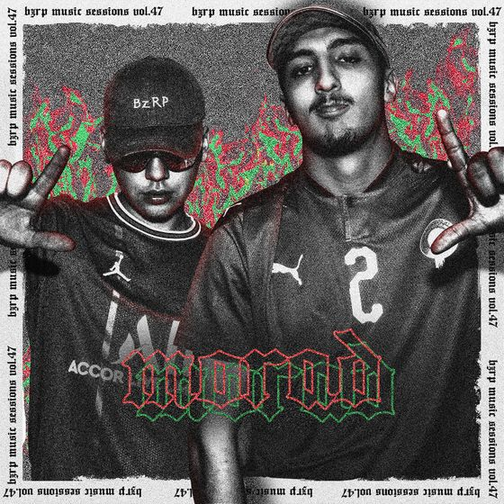

Morad: Bzrp Music Sessions, Vol. 47
Bizarrap & Morad
Originele video

M.D.L.R., ah la
M.D.L.R., ah la
No tenía para entrar en las tienda'
Dudo que ese mundo tú ya lo entienda'
Me tenía que robar to'a las prenda'
Ahora pago to' los meses Hacienda
No tenía para entrar en las tienda'
Dudo que ese mundo tú ya lo entienda'
Me tenía que robar to'a las prenda'
Ahora pago to' los meses Hacienda
Morad no declara, no necesitará y no pararé
Tiran de jaque mate, mejor contrólate porque cogeré
Uno tе atará y, la verda', no sé lo que te haré
Sé quе llorarás, pero tranquilo, que yo te cuidaré
Gangster pide seguridad
No, no, no, no, no
Dicen tener la humildad No, no, no, no, no
Dicen tener mucha maldad
No, no, no, no, no
Dicen, pero no es la verdad
Escucha la verdad
Solo digo cosas clara', nadie habla a la cara
De la calle soy la para, de los tiempo' de la Mara
Antes dudo que cantara, pero ahora cantaré (ala)
Tre-treinta kilos, nunca pararé
Noches con el desespero, Biza, no me pongas pero'
El paquete es mío entero, amor siempre al dinero
Y la mamá es la primera, eso nunca cambiaré
En-en la mente siempre la tendré, eh-eh
Primero con Biza que viene de África, eh-eh
Parece que a muchos molesta, muchos pica, eh-eh
Pago en mano, pago a tocateca, eh-eh
Pago en mano, siempre boca chica, eh-eh
No tenía para entrar en las tienda'
Dudo que ese mundo tú ya lo entienda'
Me tenía que robar to'a las prenda'
Ahora pago to' los meses Hacienda
No tenía para entrar en las tienda'
Dudo que ese mundo tú ya lo entienda'
Me tenía que robar to'a las prenda'
Ahora pago to' los meses Hacienda
Morad no declara, no necesitará y no pararé
Tiran de jaque mate, mejor contrólate porque cogeré
Uno te atará y, la verda', no sé lo que te haré
Sé que llorarás, pero tranquilo, que yo te cuidaré
M.D.L.R., la nueva era
M.D.L.R., la nueva era
M.D.L.R., la
M.D.L.R., la
M.D.L.R., la
M.D.L.R., la nueva era
La, la, la, ah, ah, ah, ah
(No tenía para entrar en las tienda')
(Dudo que ese mundo tú ya lo entienda')
La, la, la, ah, ah, ah, ah
(Me tenía que robar to'a las prenda')
(Ahora pago to' los meses Hacienda)
La, la, la, ah, ah, ah, ah
(No tenía para entrar en las tienda')
(Dudo que ese mundo tú ya lo entienda')
La, la, la, ah, ah, ah, ah
(Me tenía que robar to'a las prenda')
(Ahora pago to' los meses Hacienda)
(Bizarrap)